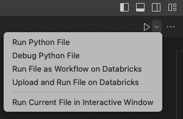

Debug code by using Databricks Connect for the Databricks extension for Visual Studio Code
This articles describes how to debug code by using the Databricks Connect integration in the Databricks extension for Visual Studio Code. See What is the Databricks extension for Visual Studio Code?.
This information assumes that you have already installed and set up the Databricks extension for Visual Studio Code. See Install the Databricks extension for Visual Studio Code.
Note
This feature is Experimental.
Databricks Connect integration within the Databricks extension for Visual Studio Code supports only a portion of the Databricks client unified authentication standard. For more information, see Authentication setup for the Databricks extension for Visual Studio Code.
The Databricks extension for Visual Studio Code includes Databricks Connect. You can use Databricks Connect from within the Databricks extension for Visual Studio Code to run and do step-through debugging of individual Python (.py) files and Python Jupyter notebooks (.ipynb). The Databricks extension for Visual Studio Code includes Databricks Connect for Databricks Runtime 13.0 and above. Earlier versions of Databricks Connect are not supported.
Requirements
Before you can use Databricks Connect from within the Databricks extension for Visual Studio Code, you must first meet the Databricks Connect requirements. These requirements include things such as a workspace enabled with Unity Catalog, a cluster running Databricks Runtime 13.0 or higher and with a cluster access mode of Single User or Shared, and a local version of Python installed with its major and minor versions matching those of Python installed on the cluster.
Step 1: Create a Python virtual environment
Create and activate a Python virtual environment for your Python code project. Python virtual environments help to make sure that your code project is using compatible versions of Python and Python packages (in this case, the Databricks Connect package). The instructions and examples in this article use venv or Poetry for Python virtual environments. Databricks has not fully tested the Databricks Connect package with other types of Python virtual environments, such as Conda.
Create a Python virtual environment using venv
From your Visual Studio Code terminal (View > Terminal) set to the root directory of your Python code project, instruct
venvto use Python for the virtual environment, and then create the virtual environment’s supporting files in a hidden directory named.venvwithin the root directory of your Python code project, by running the following command:# Linux and macOS python3.10 -m venv ./.venv # Windows python3.10 -m venv .\.venv
The preceding command uses Python 3.10, which matches the major and minor version of Python that Databricks Runtime 13.0 uses. Be sure to use the major and minor version of Python that matches your cluster’s installed version of Python.
If Visual Studio Code displays the message “We noticed a new environment has been created. Do you want to select it for the workspace folder,” click Yes.
Use
venvto activate the virtual environment. See the venv documentation for the correct command to use, based on your operating system and terminal type. For example, on macOS runningzsh:source ./.venv/bin/activate
You will know that your virtual environment is activated when the virtual environment’s name (for example,
.venv) displays in parentheses just before your terminal prompt.To deactivate the virtual environment at any time, run the command
deactivate.You will know that your virtual environment is deactivated when the virtual environment’s name no longer displays in parentheses just before your terminal prompt.
Skip ahead to Step 2: Update your Python code to establish a debugging context.
Create a Python virtual environment using Poetry
Install Poetry, if you have not done so already.
From your Visual Studio Code terminal (View > Terminal) set to the root directory of your existing Python code project, instruct
poetryto initialize your Python code project for Poetry, by running the following command:poetry initPoetry displays several prompts for you to complete. None of these prompts are specific to the Databricks extension for Visual Studio Code or to Databricks Connect. For information about these prompts, see init.
After you complete the prompts, Poetry adds a
pyproject.tomlfile to your Python project. For information about thepyproject.tomlfile, see The pyproject.toml file.With the Visual Studio Code terminal still set to the root directory of your Python code project, instruct
poetryto read thepyproject.tomlfile, resolve the dependencies and install them, create apoetry.lockfile to lock the dependencies, and finally to create a virtual environment. To do this, run the following command:poetry installInstruct Visual Studio Code to use the Python interpreter that is included in the virtual environment for this Python project, as follows:
Find the full path to the Python interpreter that is in the virtual environment for this Python project, by running the following command from the project’s root directory:
poetry env info
Copy the full path that is displayed in the
Virtualenv > Executablefield’s output, for example the full path that containspypoetry/virtualenvs.In the Command Palette (View > Command Palette), enter the command
>Python: Select Interpreter.Enter the full path to the Python interpreter that you just copied.
With the Visual Studio Code terminal still set to the root directory of your Python code project, instruct
poetryto activate the virtual environment and enter the shell. To do this, run the following command:poetry shellYou will know that your virtual environment is activated and the shell is entered when the virtual environment’s name displays in parentheses just before your terminal prompt.
To deactivate the virtual environment and exit the shell at any time, run the command
exit.You will know that you have exited the shell when the virtual environment’s name no longer displays in parentheses just before your terminal prompt.
For more information about creating and managing Poetry virtual environments, see Managing environments.
Step 2: Update your Python code to establish a debugging context
To establish a debugging context between Databricks Connect and your cluster, your Python code must initialize the DatabricksSession class by calling DatabricksSession.builder.getOrCreate().
Note that you do not need to specify settings such as your workspace’s instance name, an access token, or your cluster’s ID and port number when you initialize the DatabricksSession class. Databricks Connect gets this information from the configuration details that you already provided through the Databricks extension for Visual Studio Code earlier in this article.
For additional information about initializing the DatabricksSession class, see the Databricks Connect code examples.
Important
If you use the Databricks extension for Visual Studio Code to set the authentication type to personal access tokens, then the extension sets a related SPARK_REMOTE environment variable with debugging context settings for use by Databricks Connect. These debugging context settings include the related workspace instance name, personal access token, and cluster ID.
In Databricks Connect, you can use the DatabricksSession or SparkSession class along with SPARK_REMOTE and personal access token authentication to quickly and easily establish the debugging context programmatically. For other supported Databricks authentication types, you can use only the DatabricksSession class to establish the debugging context.
For more information, see Set up the client in the Databricks Connect documentation.
Step 3: Enable Databricks Connect
With the extension opened and the Workspace section configured for your code project, do the following:
In the Visual Studio Code status bar, click the red Databricks Connect disabled button.
If the Cluster section is not already configured in the extension, the following message appears: “Please attach a cluster to use Databricks Connect.” Click Attach Cluster and select a cluster that meets the Databricks Connect requirements.
If the Cluster section is configured but the cluster is not compatible with Databricks Connect, click the red Databricks Connect disabled button, click Attach Cluster, and select a compatible cluster.
If the Databricks Connect package (and its dependencies) are not already installed, the following message appears: “For interactive debugging and autocompletion you need Databricks Connect. Would you like to install it in the environment
<environment-name>.” Click Install.In the Visual Studio Code status bar, the blue Databricks Connect enabled button appears.
If the red Databricks Connect disabled button still appears, click it, and complete the on-screen instructions to get the blue Databricks Connect enabled button to appear.
After the blue Databricks Connect enabled button appears, you are now ready to use Databricks Connect.
Note
You do not need to configure the extension’s Sync Destination section in order for your code project to use Databricks Connect.
If you use Poetry, you can synchronize your pyproject.toml and poetry.lock files with the installed Databricks Connect package (and its dependencies) by running the following command. Be sure to replace 13.3.2 with the version of the Databricks Connect package that matches the one that was installed by the Databricks extension for Visual Studio Code for your project.
poetry add databricks-connect==13.3.2
Step 4: Run or debug your Python code
After you enable Databricks Connect for your code project, run or debug your Python file or notebook as follows.
To run or debug a Python (.py) file:
In your code project, open the Python file that you want to run or debug.
Set any debugging breakpoints within the Python file.
In the file editor’s title bar, click the drop-down arrow next to the play (Run or Debug) icon. Then in the drop-down list, select Debug Python File. This choice supports step-through debugging, breakpoints, watch expressions, call stacks, and similar features. This choice uses Databricks Connect to run Python code locally, run PySpark code on the cluster in the remote workspace, and send remote responses back to Visual Studio Code for local debugging.
Note
Other choices, which do not support debugging, include:
Run Python File to use Databricks Connect to run the file or notebook, but without debugging support. This choice sends the file to the remote workspace, runs the file’s Python and PySpark code on the remote cluster in the workspace, and sends the remote response to the Visual Studio Code Terminal.
Upload and Run File on Databricks to send the file to the remote workspace, runs the file’s Python and PySpark code on the remote cluster in the workspace, and sends the remote response to the Visual Studio Code terminal. This choice does not use Databricks Connect.
Run File as Workflow on Databricks to send the file to the remote workspace, run the file’s Python and PySpark code on the cluster that is associated with an automated Databricks job, and send the results to an editor in Visual Studio Code. This choice does not use Databricks Connect.
The Run Current File in Interactive Window option, if available, attempts to run the file locally in a special Visual Studio Code interactive editor. Databricks does not recommend this option.
To run or debug a Python Jupyter notebook (.ipynb):
In your code project, open the Python Jupyter notebook that you want to run or debug. Make sure the Python file is in Jupyter notebook format and has the extension
.ipynb.Tip
You can create a new Python Jupyter notebook by running the >Create: New Jupyter Notebook command from within the Command Palette.
Click Run All Cells to run all cells without debugging, Execute Cell to run an individual corresponding cell without debugging, or Run by Line to run an individual cell line-by-line with limited debugging, with variable values displayed in the Jupyter panel (View > Open View > Jupyter).
For full debugging within an individual cell, set breakpoints, and then click Debug Cell in the menu next to the cell’s Run button.
After you click any of these options, you might be prompted to install missing Python Jupyter notebook package dependencies. Click to install.
For more information, see Jupyter Notebooks in VS Code.